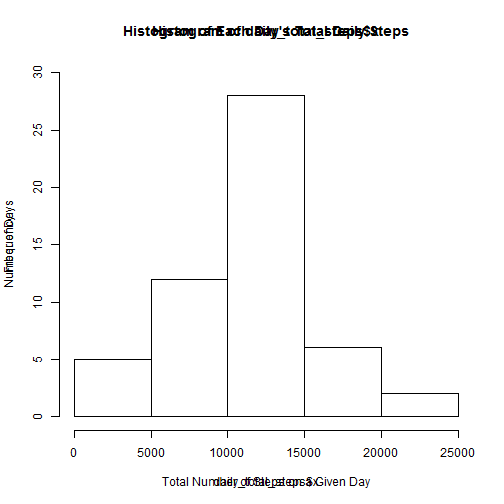

These are the notes of my exploration of the raw data. They are clearly not suitable for publication to any audience not familiar with the R language and the general approach to data exploration, employed in this context. They simply form a complete record of my exploration and as such they do not elucidate this particular dataset and its implications all that clearly. However, these transformations of the data form the foundations for the preparation of a publishable report.
The instructions and data for this assignment were forked from
https://github.com/rdpeng/RepData_PeerAssessment1
and placed in my local repo: PeerAssessment1
At the conclusion of these steps, the new repo was pushed back to GitHub, from where it can now be forked.
##Functions
lookup_steps <- function(average_steps, missing_days){
ii <- dim(missing_days)
i <- ii[1]
for(n in 1:i){
day <- missing_days[n, "day"]
interval <- missing_days[n, "interval"]
missing_days[n, "steps"] <- average_steps[(average_steps$day==day)
&(average_steps$interval==interval), "steps"]
next
}
return(missing_days)
}
#this function will return the day of the week for a given date
what_day <- function(date){
date <- as.POSIXlt(date,format="%Y-%m-%d")
wday <- weekdays(date)
}
#data$day <- sapply(data$date, what_day)
#this function will adjust the interval minutes to decimal fraction of an hour
dec_mins <- function(x){
hours <- floor(x/100)
mins <- (x %% 100)*100/60
y <- as.integer(round(100*hours + mins))
}
#setwd("C:/Users/Brian/Documents/PeerAssessment1")#Set WD to local repo.
unzip("activity.zip")#leaves the data file in the WD.
data <- read.csv(file = "activity.csv", header = TRUE)
####Code
str(data)
## 'data.frame': 17568 obs. of 3 variables:
## $ steps : int NA NA NA NA NA NA NA NA NA NA ...
## $ date : Factor w/ 61 levels "2012-10-01","2012-10-02",..: 1 1 1 1 1 1 1 1 1 1 ...
## $ interval: int 0 5 10 15 20 25 30 35 40 45 ...
summary(data)
## steps date interval
## Min. : 0.0 2012-10-01: 288 Min. : 0
## 1st Qu.: 0.0 2012-10-02: 288 1st Qu.: 589
## Median : 0.0 2012-10-03: 288 Median :1178
## Mean : 37.4 2012-10-04: 288 Mean :1178
## 3rd Qu.: 12.0 2012-10-05: 288 3rd Qu.:1766
## Max. :806.0 2012-10-06: 288 Max. :2355
## NA's :2304 (Other) :15840
d <<- dim(data)
d
## [1] 17568 3
c1 <<- sum(!is.na(data$steps))#Steps recorded as anticipated
c1
## [1] 15264
c2 <<- sum((!is.na(data$steps)) & (data$steps == 0))#Zero Steps recorded
c2
## [1] 11014
c3 <<- sum(is.na(data$steps))#NA
c3
## [1] 2304
####Commentary
The above code shows that the raw data is a dataframe composed of 17568 observations of 3 variables.
The dataframe contains 15264 complete records, 11014 of which recorded 0 steps. A further 2304 records have missing data ($steps == NA) which is interpreted to mean that the device was malfunctioning at these intervals.
###Is there a pattern to the missing data?
####Code
#Check the other 2 variables for NA's
data[is.na(data$date),]
## [1] steps date interval
## <0 rows> (or 0-length row.names)
data[is.na(data$interval),]
## [1] steps date interval
## <0 rows> (or 0-length row.names)
#We appear to have 61 complete days of 288 * 5 minute intervals.
e1 <<- c1/288
#So, we have 8 complete days of missing $steps == NA
missingdays <- (data[is.na(data$steps),"date"])
length(missingdays)
## [1] 2304
a1 <- length(unique(missingdays))
e3 <<- c3/288
#This leaves us with 53*288 intervals of zero and non-zero data
dim(data[!is.na(data$steps),])
## [1] 15264 3
53*288
## [1] 15264
####Commentary
The above manipulations helped to better understand the overall shape of the data.\n It demonstrates that:
#####How many complete days do we have?
####Code
complete_days <- data[!is.na(data$steps),]#Reduces the dataset to $steps==NA
complete_days <- complete_days[complete_days$interval==0,]#Reduces the dataset to 8 days
table(complete_days$day)#Shows how many complete days on each day of the week.
## < table of extent 0 >
######Which days of the week are missing?.
data$day <- sapply(data$date, what_day)
data$day <- ordered(data$day, levels = c("Monday", "Tuesday", "Wednesday", "Thursday",
"Friday", "Saturday", "Sunday"))
missing_days <- data[is.na(data$steps),]#Reduces the dataset to $steps==NA
missing_days <- missing_days[missing_days$interval==0,]#Reduces the dataset to 8 days
table(missing_days$day)#Shows how many missing days on each day of the week.
##
## Monday Tuesday Wednesday Thursday Friday Saturday Sunday
## 2 0 1 1 2 1 1
####Commentary
The above code shows that both the complete and the missing days are spread evenly throughout the days of the week.
For this part of the assignment, you can ignore the missing values in the dataset.
data2 <- data[!is.na(data$steps),] #Remove the rows with $steps == NA
dim(data2) #Confirm that only NA's are removed
## [1] 15264 4
length(unique(data2$date)) #Confirm the number of days of complete data (see previous calculation)
## [1] 53
str(data2)
## 'data.frame': 15264 obs. of 4 variables:
## $ steps : int 0 0 0 0 0 0 0 0 0 0 ...
## $ date : Factor w/ 61 levels "2012-10-01","2012-10-02",..: 2 2 2 2 2 2 2 2 2 2 ...
## $ interval: int 0 5 10 15 20 25 30 35 40 45 ...
## $ day : Ord.factor w/ 7 levels "Monday"<"Tuesday"<..: 2 2 2 2 2 2 2 2 2 2 ...
#Count the total steps for each day for the histogram
daily_total_steps <- aggregate(data2$steps, by=list(data2$date), FUN=sum)
hist(daily_total_steps$x, ylim=c(0, 20),
main = "Histogram of Each Day's Total Daily Steps", breaks = 10,
xlab = "Total Number of Steps on a Given Day",
ylab = "Number of Days", labels = TRUE)

dev.copy(png, "C:/Users/Brian/Documents/PeerAssessment1/figure/hist1.png")
## png
## 3
dev.off()
## pdf
## 2
#Calculate and report the mean and median total number of steps taken per day
summary(daily_total_steps$x)
## Min. 1st Qu. Median Mean 3rd Qu. Max.
## 41 8840 10800 10800 13300 21200
#daily_mean_steps <- aggregate(data2$steps, by=list(data2$date), FUN=mean)
#daily_median_steps <- aggregate(data2$steps, by=list(data2$date), FUN=median)
The dec_mins function constructed up in the Functions section of this document was used to rid the plot of the gaps between the 55th and the 60th minute of each hour.
###Code
###Make a time series plot (i.e. type = "l") of the 5-minute interval (x-axis) and the average number of steps taken, averaged across all days (y-axis)
data3 <- data[!is.na(data$steps),]
data3$interval <- sapply(data3$interval, dec_mins)#convert minutes to a decimal
library(ggplot2)
data3$interval <- data3$interval/100
data3$steps <- data3$steps/5
interval_mean_steps <- aggregate(data3$steps, by=list(data3$interval), FUN=mean)
png("C:/Users/Brian/Documents/PeerAssessment1/figure/plot2.png")
plot(interval_mean_steps, type = "l", xaxp = c(0, 24, 4),
xlab = "Time of day (24 hour clock), starting at midnight.",
ylab = "Average number of steps per minute.",
main = "Average activity level across the day (Steps per minute.)")
dev.off()
## pdf
## 2
###Discussion
As shown above, the missing days are distributed evenly between the weekdays (6) and the weekends (2). So it was decided to impute the missing values by calculating the mean for a given interval on a given day of the week and to insert that mean into the same missing day/interval.
###Code
complete_data <- data[!is.na(data$steps),] #Remove the rows with $steps == NA
average_steps <- aggregate(complete_data$steps, by=list(complete_data$day, complete_data$interval),
FUN=mean)
names(average_steps) <- c("day", "interval", "steps")
average_steps$steps <- as.integer(round(average_steps$steps))
missing_days <- data[is.na(data$steps),]#select the records with missing $steps == NA
fixed_missing_days <- lookup_steps(average_steps, missing_days)# ref: Functions section this report
fixed_data <- rbind(complete_data, fixed_missing_days)
#check for missing $steps
fixed_data[is.na(fixed_data$steps),]
## [1] steps date interval day
## <0 rows> (or 0-length row.names)
###Commentary
As with the previous plot, the gaps had to be removed at the ends of each hour.
The comparison between the week days and the weekends shows a reasonably predictable cultural pattern of an early morning walk or jog followed by a mainly sedentary lifestyle during the rest of the working day. On the weekend, there is a higher average level of activity across the days, consistent with weekend leisure activities.
###Code
data4 <- data[!is.na(data$steps),]#remove the missing $steps == NA
#Convert minutes to 100ths of an hour to remove gaps in plot between 55 an 60 minutes.
data4$interval <- sapply(data4$interval, dec_mins)#See dec_mins()in Functions
date <- as.POSIXlt(data4$date,format="%Y-%m-%d")#Convert $date to DATE format
head(date)
## [1] "2012-10-02 EST" "2012-10-02 EST" "2012-10-02 EST" "2012-10-02 EST"
## [5] "2012-10-02 EST" "2012-10-02 EST"
head(date$wday)
## [1] 2 2 2 2 2 2
wdays <- (weekdays(date))
wdays <- data.frame(day = wdays, interval = data4$interval, steps = data4$steps)
head(wdays)
## day interval steps
## 1 Tuesday 0 0
## 2 Tuesday 8 0
## 3 Tuesday 17 0
## 4 Tuesday 25 0
## 5 Tuesday 33 0
## 6 Tuesday 42 0
weekends <- wdays[(wdays$day == "Saturday")|(wdays$day == "Sunday"), c("interval", "steps")]
weekdays <- wdays[!((wdays$day == "Saturday")|(wdays$day == "Sunday")), c("interval", "steps")]
weekend_mean_steps <- aggregate(weekends$steps, by=list(weekends$interval), FUN=mean)
weekday_mean_steps <- aggregate(weekdays$steps, by=list(weekdays$interval), FUN=mean)
weekend.df <- data.frame(day = "weekend", interval = weekend_mean_steps$Group.1, steps = weekend_mean_steps$x)
weekday.df <- data.frame(day = "weekday", interval = weekday_mean_steps$Group.1, steps = weekday_mean_steps$x)
combined.df <- rbind(weekend.df, weekday.df)
combined.df$interval <- combined.df$interval/100
library(lattice)
combined_plot <- xyplot(steps ~ interval | day , data=combined.df, type = "l", layout = c(1,2),
xlab = "Time of day (24 hour clock), starting at midnight.",
ylab = "Average number of steps per minute.",
main = "Comparing average activity levels across the day\n on Weekdays and Weekends.")
trellis.device(device = "png", file = "C:/Users/Brian/Documents/PeerAssessment1/figure/combined_plot.png")
print(combined_plot)#, "C:/Users/Brian/Documents/PeerAssessment1/figure/combined_plot.png")
dev.off()
## pdf
## 2
This document was created using:
RStudio Version 0.98.953 - © 2009-2013 RStudio, Inc.
knitr Version 1.6